В начале 18-го века Россия считалась отсталой страной. Именно поэтому Петр I решил построить новый город, послуживший окном в Европу. Санкт-Петербург, названный в честь святого Петра – небесного покровителя царя, основан 27 мая (16 мая по старому стилю) 1703 г. Этот день является одним из главных для российской истории. С него начинается история возникновения Санкт-Петербурга. Новая столица (Санкт-Петербург был столицей России на протяжении двух столетий, начиная с 1710 года) строилась силами крепостных, которых насильно сгоняли на постройку города. Говорят, что Петербург стоит на костях усопших. Во время строительства от недоедания и изнурительного труда умерло несколько тысяч рабочих-крестьян. В 1710 году Петр приказал переселить в Петербург около 15 тысяч разных мастеровых людей из всех областей России. Раздача земель в городе была бесплатной. Таким образом, очень быстро застроилась центральная часть города, которая сегодня является историческим центром. Строительство тех времен было ориентировано на европейские каноны, все постройки возводилось иностранными мастерами по образу и подобию архитектуры других стран. Санкт-Петербург строился по четкой планировке. По задумкам Петра I новый город должен был походить на Венецию или Амстердам.
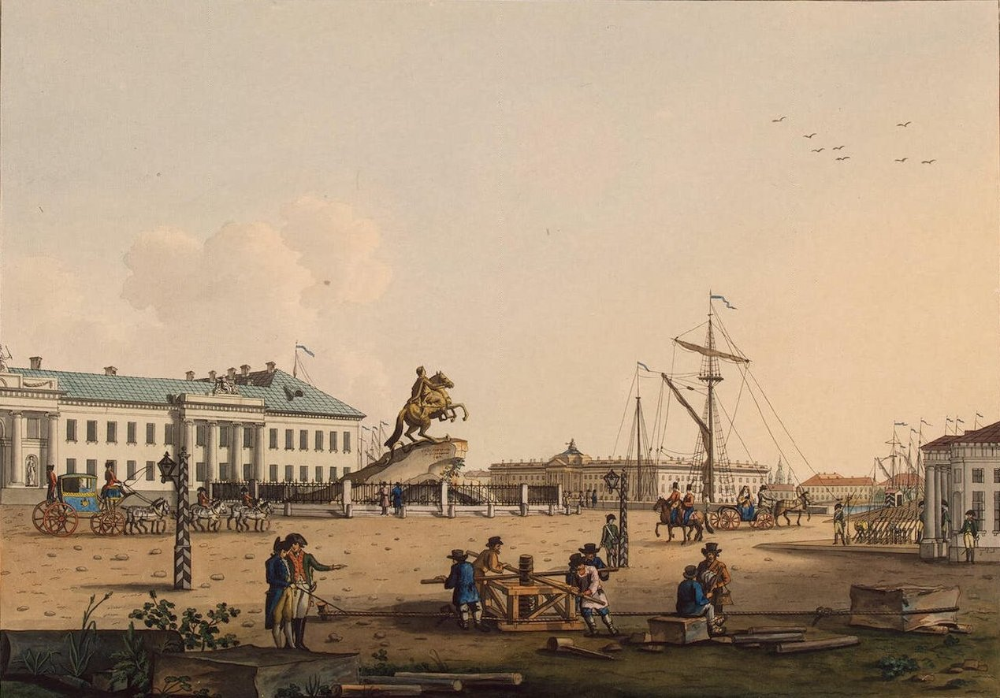Эрмитаж считается сокровищницей мировой живописи. Основанный в 1764 году как частная картинная галерея Екатерины II, сегодня он является музеем мирового значения. Здесь собраны коллекции работ именитых художников разных стран и периодов: живописное искусство Фландии, Испании, Голландии, Венецианской школы эпохи Возрождения и т.д. Посетители могут увидеть такие прославленные шедевры, как «Юноша с лютней» Караваджо, «Мадонна Литта» да Винчи, «Вакх» Рубенса и другие. Помимо картин, в музее представлены скульптура разных стран. Отдельный интерес представляет галерея портретов Романовых и внутреннее убранство самого дворца. Чтобы посмотреть все экспонаты в этом музее, нужно потратить несколько дней.
В настоящее время стоимость билета на один двухчасовой сеанс в Главный музейный комплекс составляет 500 рублей. Цена билета на специальный маршрут с посещением Золотой и Бриллиантовой кладовой Галереи драгоценностей, в билет входит экскурсионное обслуживание): 1500 рублей. * Бесплатное посещение каждый четверг. Посещение музея осуществляется только по сеансам. Среда, четверг, воскресенье: 11.00, 11.30, 12.00, 12.30, 13.00, 13.30, 14.00, 14.30, 15.00, 16.00. Вечерние сеансы вторник, пятница, суббота в 16:30, 17:00, 17.30 и 18.00. Продолжительность сеанса 2 часа.
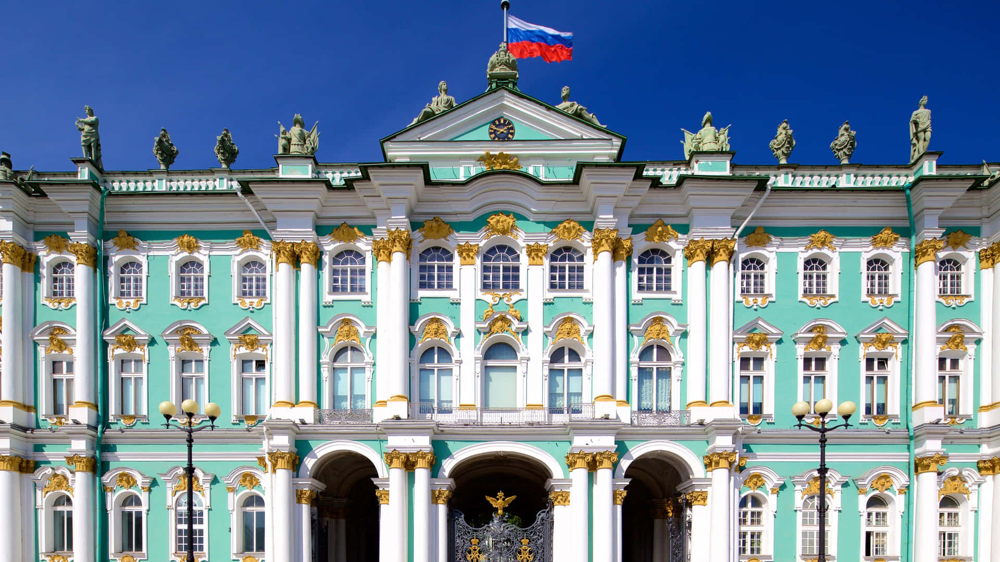Это оборонительное сооружение было построено на Заячьем острове в 1703 году, но ни разу не участвовало в военных действиях. Долгое время крепость использовалась как тюрьма: здесь сидели царевич Алексей, литераторы Радищев, Чернышевский, Достоевский и другие известные фигуры. Внутри крепости расположен Петропавловский собор, в котором захоронены цари и их родственники по линии Романовых. Сегодня в крепости размещается государственный музей истории Санкт-Петербурга.
Заячий остров открыт ежедневно с 6:00 до 21:00. Территория, огороженная крепостными стенами, доступна для посещения каждый день, с 09:50 до 20:30. Входные билеты в Петропавловскую крепость нельзя купить на официальном сайте онлайн, только в кассах. Но, если вы хотите посетить и другие достопримечательности Петербурга, присмотритесь к карте гостя города. Купив ее, турист получает бесплатный вход во множество музеев и интересных мест, в том числе в Петропавловскую крепость, Турецкий бастион и Великокняжескую усыпальницу.
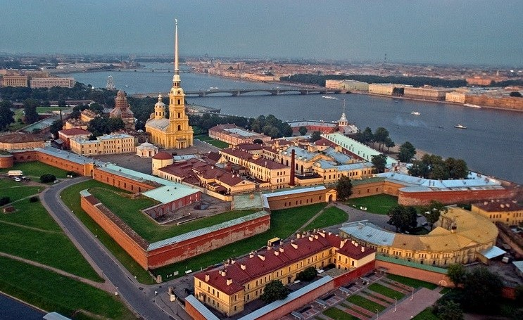Самый крупный собор Северной столицы строился на протяжении 40 лет. Современное здание — четвертое по счету, построенное в духе позднего классицизма по проекту архитектора Огюста Монферрана. Храм возведен в честь преподобного Исаакия Далматского. Снаружи собор украшают более 350 скульптур, посвященных Иисусу Христу. Вход в храм платный, в стоимость входит экскурсия. Наверху собора, на высоте 43 метра, расположена обзорная площадка, с которой можно полюбоваться панорамой города. Чтобы подняться на колоннаду, нужно пройти по винтовой лестнице — готовьтесь много ходить.
Режим работы: С 10:00 до 18:00. Выходной день — среда. Работа касс прекращается за 30 минут до закрытия. Стоимость билета в Исаакиевский собор Полный, взрослый – 450 руб. Льготный (детям от 7 до 18 лет, пенсионерам РФ и Беларуси, студентам, аспирантам) – 200 руб.
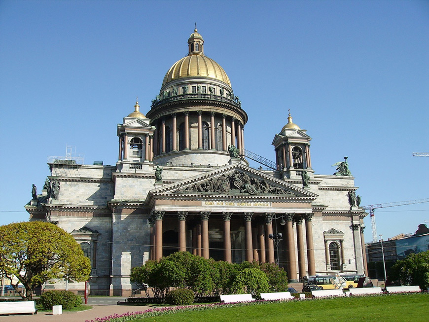Интересное и модное место на Васильевском острове. Очень креативный проект на берегу Финского залива. На территории проходят интересные мероприятия и много кафе, баров. Всегда много молодёжи, хорошее место для общения и встреч. Кафе и большинство локаций «Севкабель порта» открыты ежедневно с 10:00 до 23:00, набережная и панорамные виды доступны всегда.
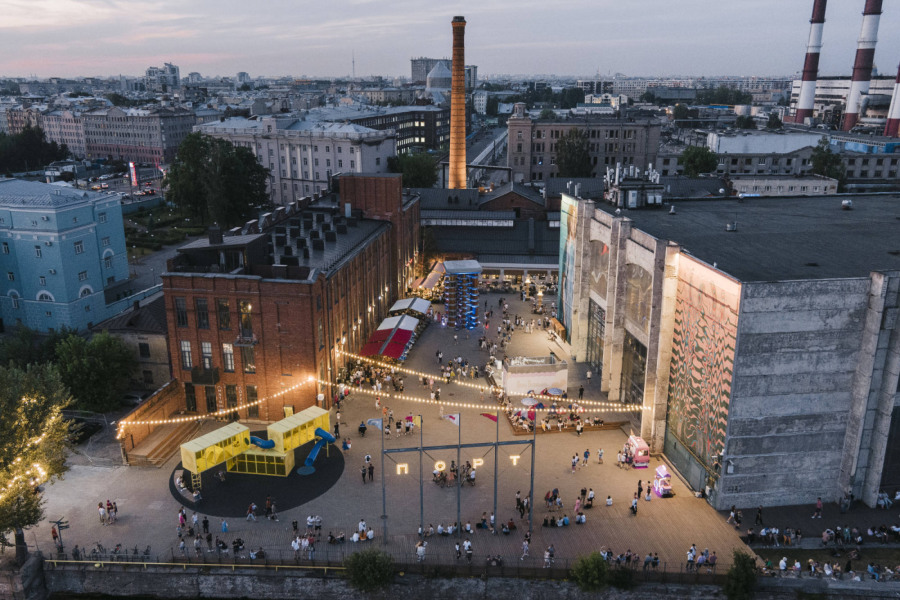Культурный центр в здании бывшего хлебозавода: галереи, магазины, кафе, терраса на крыше с видом на город. График работы: Ежедневно с 9:00 до 23:00
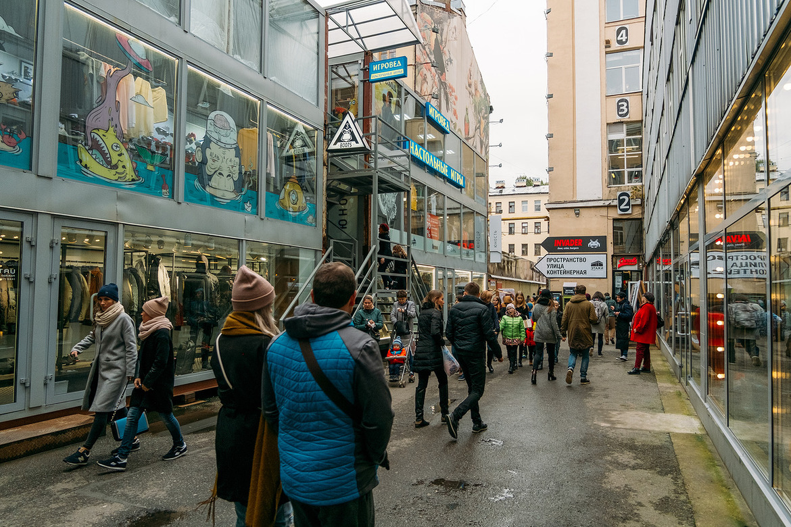Общедоступное место отдыха для людей всех возрастов в центре Санкт-Петербурга. В отреставрированных зданиях времён Петра I оборудованы места для отдыха и развлечений. Парк работает с 9:00 до 22:00 с понедельника по четверг и до 23:00 с пятницы по воскресенье.
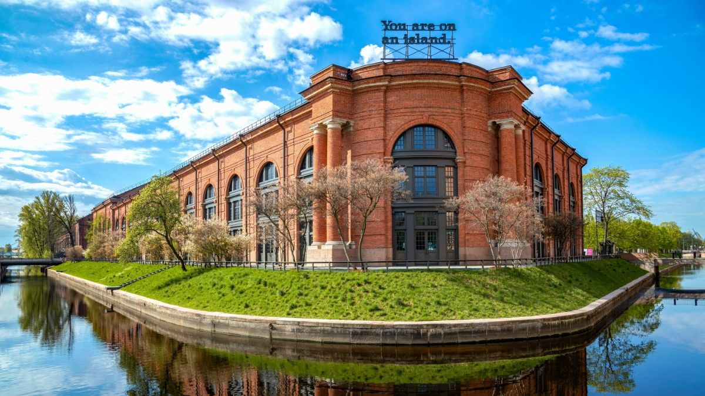Первым делом надо знать, где остановиться. Если вы располагаете достаточной суммой денег, чтобы снять солидные апартаменты, где бы вы жили со всеми удобствами мира вот небольшой список отелей и хостелов:
«Дорого-богато»: «Гельвеция» — весь московский бомонд останавливается здесь, «Кемпински Мойка 22» — отличное расположение, «Лотте» — есть номера с видом на Исаакий, «Дворец Трезини» на набережной Невы — смесь из стилей цыганского барокко и махачкалинского ресторана, но многим нравится, «Талион» — сдержаннее в стилях, чем предыдущий, расположен на Мойке. С крутым видом: отель «Санкт-Петербург» — если успели забронировать номер с видом на Неву в дни «Алых парусов» — у вас места в первом ряду, чтобы смотреть фейерверк. Где из окон виден Исаакий: «Four Seasons», «Астория», «Англетер».
Если вы едете в Питер на длительный срок, есть смысл снять квартиру. В этом случае лучше выбрать апартаменты рядом с метро. Посуточную аренду надо искать на Суточно.ру или на Авито.
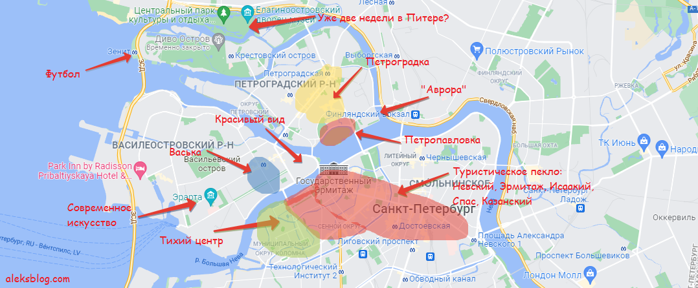Ни для кого ни секрет, что тема о петербургской погоде одна из самых важных у туристов, которые собираются посетить Северную столицу. Погода в Питере часто меняется: если утром светит солнце, это не значит, что весь день так будет. В любую минуту может пойти дождь. Поэтому, чтобы ливень не помешал любоваться многочисленными архитектурными достопримечательностями Культурной столицы России — нужно взять зонтик, плащ (дождевик) и ботинки.
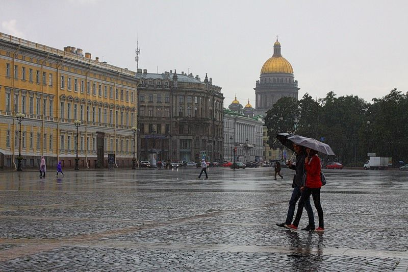Специально для туристов, желающих открыть для себя огромное культурное и историческое наследие города, разработана карта гостя Санкт-Петербурга. В карту гостя входят посещения музеев и экскурсий, также она предоставляет скидки на бронирование гостиниц, посещение кафе и ресторанов, карта включает электронный билет для проезда на общественном транспорте, работающий аналогично "Подорожнику". При активном посещении музеев и экскурсий она позволит сэкономить от 30 % и более затрат на поездку. Пополнить карту можно в кассах метрополитена. Приобрести карту можно в специальных точках продажи.
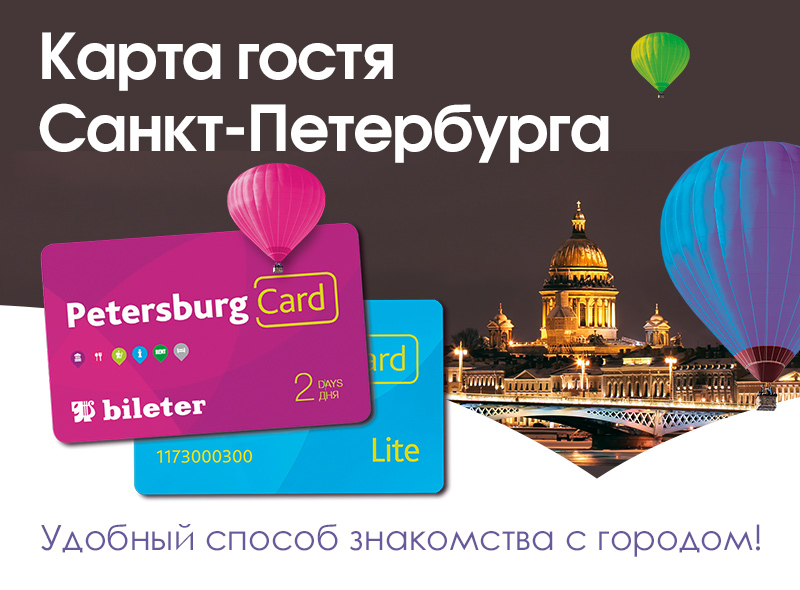Речные прогулки по рекам и каналам вам будут предлагать на каждом шагу. Сразу уточняйте, в какое место возвращается ваш кораблик. Если вы хотите сэкономить, то лучше заранее купите билет на сайте, заодно и выберете нужный вам маршрут — на месте вы не сможете сообразить, что за маршрут вам предлагается и будете разочарованы, если не увидите желаемых достопримечательностей. В прохладную погоду вам, конечно, предложат плед, но все же лучше утеплиться, чтоб за часовую поездку не простудиться. О ночной прогулке по Неве с разводными мостами также лучше позаботиться заранее, купив билет через интернет.
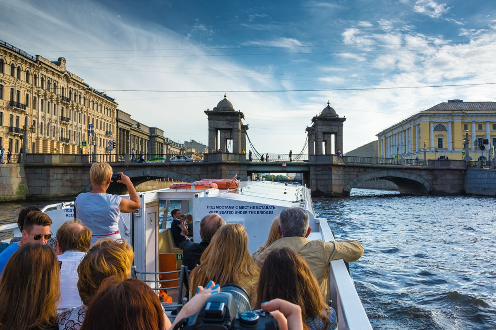Спасибо, что помогаете сделать наш сайт лучше